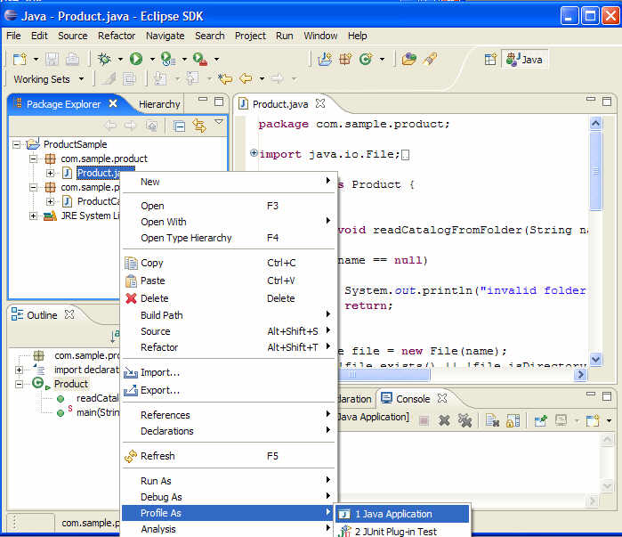
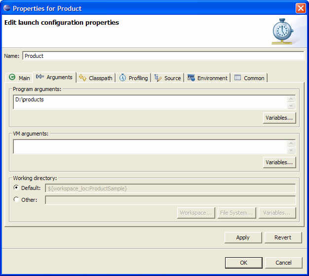
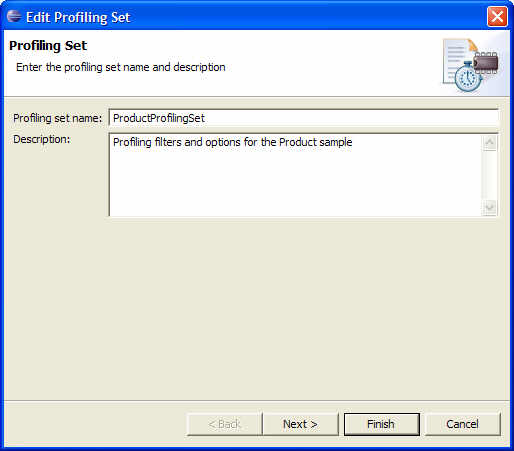
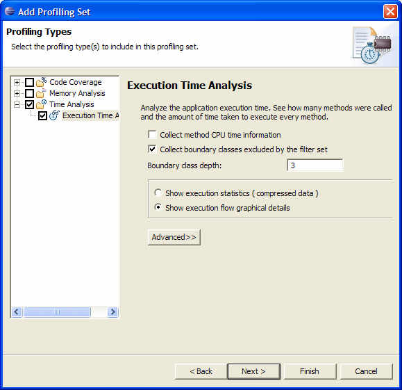
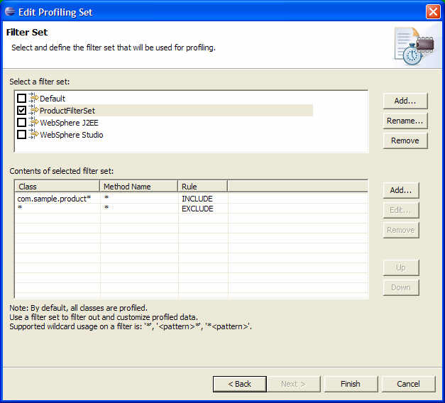
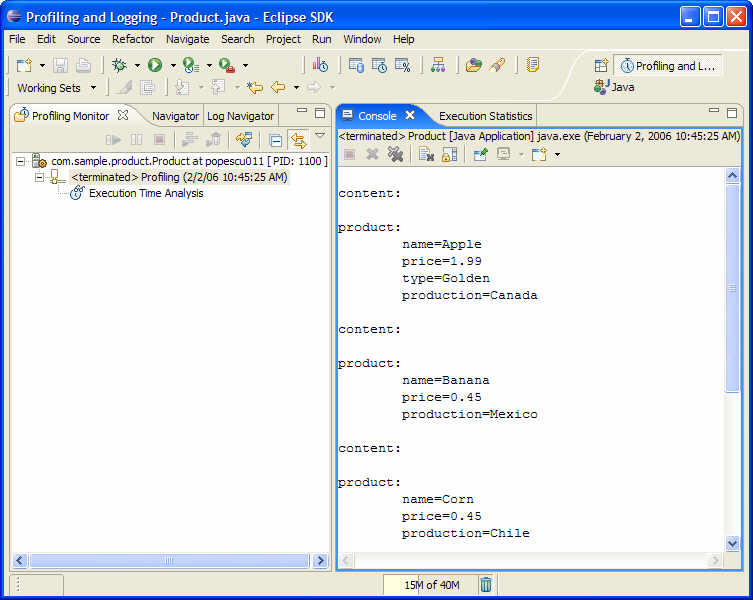
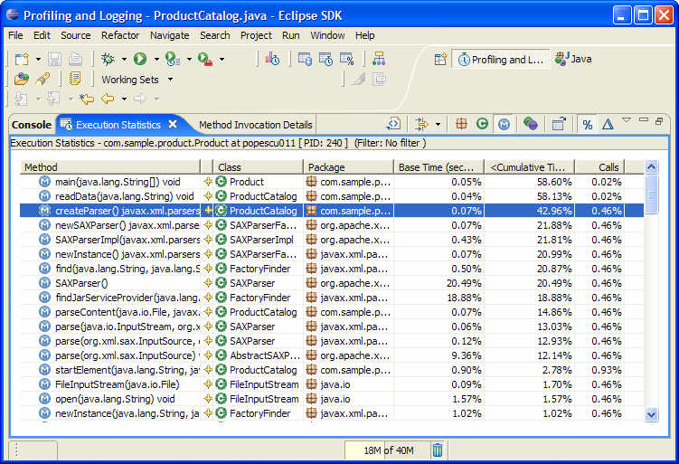
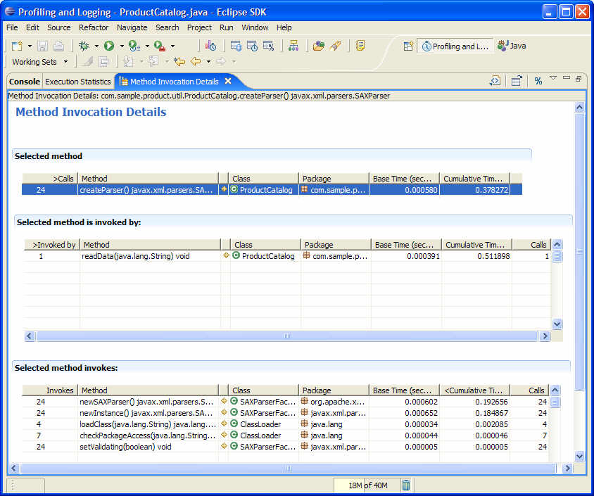
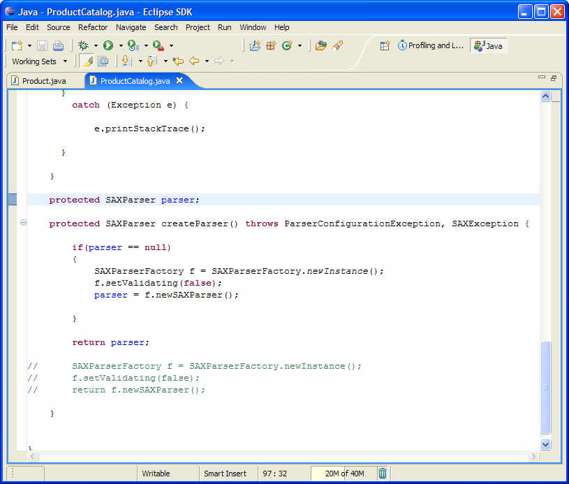

Copyright © 2001 International Business Machines Corp.
Java Application Profiling using TPTP
Summary
The Eclipse Test & Performance Tools Platform (TPTP) Profiling tool can be used to profile Eclipse plug-ins,
local Java
applications or complex applications running on multiple hosts and
different platforms.
The tool is tightly integrated with Eclipse, allowing profiling of
applications running from within Eclipse.
This article demonstrates how
to use the TPTP Profiling tool to profile
a Java application for identifying execution related hot spots. It
shows
how to start the profiling session, use the various TPTP
views to analyze the data, identify methods with high execution time
then jump to the source code to fix the performance problem.
By Valentina Popescu, IBM
February 14, 2006
Profiling an Application
In the current environment of short development cycles for delivering a
product, developers tend to focus more on the functional aspects of
application execution, mostly via testing, debugging, and code fixing.
However, many problems do not easily surface until the application is
running in production mode, 24 hours a day, 7 days a week and gets
pushed to limits during some unexpected peak periods.
The kinds of performance problems encountered in production cannot be discovered during a
debugging
session. Before deployed and run in production mode, it is important to
use a Profiling tool to analyze application execution and identify
performance problems, such as execution
bottlenecks, object leaks, and system resource limitations.
This article provides an introduction to the TPTP
Profiling
tool. It demonstrates how to use the TPTP Profiling tool to profile
a Java application in order to identify performance hot spots,
and fix and validate performance problems.
TPTP Profiling Tool
The Eclipse Test & Performance Tools Platform (TPTP) Project
offers a profiling tool for identifying and isolating performance
problems such
as performance bottlenecks, object leaks and system resource limits.
The tool
targets applications of all levels of complexity, from simple
standalone Java
applications to Eclipse plug-ins or complex enterprise
applications running
on multiple
machines and on different platforms.
Being tightly integrated with the Eclipse project, the tool
is also easy to use and extend. That means that users can plug in their
preferred views to analyze the data, or can extend the data collection
metaphor
by implementing their own flavor of data collection agent.
This article was written using the TPTP 4.1 based on the EMF 2.1 and
XSD 2.1 release builds, which require Eclipse 3.1. You can download
these drivers from here.
For TPTP 4.1 installation details go to the TPTP
download
page.
Profiling a Java application using TPTP
The product catalog sample used in this
article
is a simple Java application that parses product
information stored in separate xml files and prints the result to the
console output. The file system location for the folder containing the
product xml files is passed as a program argument when running
the main class,
Product.java.
The xml files containing the product information are provided under the
section
running
the example.
Starting the application in profiling mode
After installing the sample application, the
first step is to run the product catalog application in profiling mode.
Profile
the application by using the
Profile
As > Java Application
popup-menu on the Product class as seen in the image below.

Figure
1 Profile the Product catalog Application
 Another way of
starting the application in profiling mode is to use the Profile
action available on the Java perspective's toolbar menu. Similar to
the
Run and Debug toolbar actions, the Profile action will open the
launch configuration dialog and from there you can select the type of
application you want to profile.
Another way of
starting the application in profiling mode is to use the Profile
action available on the Java perspective's toolbar menu. Similar to
the
Run and Debug toolbar actions, the Profile action will open the
launch configuration dialog and from there you can select the type of
application you want to profile.
Setting the Java program arguments
The Profile
As > Java Application action will open the launch
configuration wizard as displayed by Figure 2.
For this example, the folder
containing the product xml files is passed as a program
argument. As described in the Figure 2 below, set the program arguments
to be x:\myPath\products,
where x:\myPath is the path
where you have unzipped the folder containing the product xml files
provided at the end of this article.

Figure 2 Product catalog sample - program
arguments
Setting profiling filters
The next step is
to set the profiling options to collect method execution information.
To set these options, click the Profile tab on the Launch Configuration
Properties wizard and select an existing profiling set or create a
custom one that better fits the application settings.
A Profiling set is a
reusable set of profiling options and filters.
The purpose of creating profiling sets is to reuse them
during consecutive runs of the same application or to share them
between applications that require the same type of profiling
information.
The steps below describe how to create a new filter set used to
profile the Product catalog application. We will be creating a new
profiling
set named ProductProfiling Set which will be set up to collect detailed
execution information and profile only packages that have the
com.sample.product prefix.
1. On the Profiling Set page enter the name and description of the new
profiling set.

Figure 3 Profiling set
page
As shown in Figure 3 above we have defined
the ProductProfilingSet that can be used during consecutive runs of the
product catalog applications. On the next run of this application, the
setting profiling filters step can be skipped.
2. Choose to collect execution details by
selecting the Execution Time Analysis option on the Profiling Types
page.
2a. Select the "Collect
boundary classes excluded by the filter set" option and enter 3 as the
Boundary class depth value.
By selecting this option, you specify that you want to collect
information for methods invoked to the specified depth starting with the methods in your filter criteria.
As an example, let's assume that we have set
the filter to collect information on method A and to filter out methods
M1, M2, M3, M4.
If the following invocation stack is executed: MyMethod > M1 >
M2 > M3 > M4 ( MyMethod invokes M1 which invokes M2 which invokes
M3 which invokes M4 ), based on the filtering criteria selected at
point 2a, the profiler will show this call stack: MyMethod >
M1 > M2 > M3 and will not display the last invocation M3 > M4
(since this exceeds the specified depth of 3).

Figure 4
Choose to collect execution information
3. Select the classes to be profiled.
Use the Filter Set page to choose the classes you want to profile.
There are a set of predefined filters available but for this sample you
will create a new filter set named ProductFilterSet which filters out
everything except packages prefixed by com.sample.product.
Follow these steps to create the filter set:
3a) Select the Add... action from the filter set list. In
the result dialog enter ProductFilterSet as the name of the new filter
then click OK
3b) Use the Add... button from the Contents of selected
filter set list to create the two filters as shown in Figure 5.

Figure 5 Choose classes you
want to profile
Run the Product catalog application by pressing OK on the Launch
Configuration
wizard. Choose Yes when asked to switch to the Profiling and Logging
perspective.
You should see the result of the program execution in the Console view,
similar with what is presented in Figure 6 below.

Figure 6 Product catalog application has been executed
The TPTP profiling tool allows you
to
interact with your profiled application. You can pause and resume
monitoring, run garbage collection on the profiled application, collect
object references or terminate the application.
Identify performance hot spots using the Execution Statistics view
Use the Execution Statistics view to identify performance hot spots. To
open this view, select the process in the Profiling Monitor
view and select Open with > Execution Statistics pop-up action.
The Execution Statistic view shown in the Figure 7 below display the
methods executed, sorted by cumulative time. The cumulative time
for a method is the time spent to execute that method, including
any invocations to other methods.

Figure 7
Execution
Statistics View
As presented in Figure 4, the Execution
Statistics shows the main(java.lang.String[]),
readData(java.lang.String) and createParser() methods as the top three
methods with the highest execution time. It is not surprising to see
the main and readData methods on this list since the first one is the
starting point of the application execution while the second as
suggested by it's name, is reading the products data from the xml files.
What comes as a surprise for us is the fact that createParser()
method, which
just creates a SAX parser instance used to parse
the xml files, has such a high execution time. The execution time for
this method accounts for 42.96% of
the application's total execution time. The Execution Statistics have
helped us to identify this method as a potential place to optimize the
application's performance.
Once we have identified this, let's drill down and see the
createParser() method's execution details.
Open Method Invocation Details view on the createParser() method
We will use next the Method Invocation
Details view to see what methods in the createParser() call stack are
responsible for the method's slow execution time. Open the Method
Invocation Details view by double-click on the createParser() method in
the Execution Statistics view.

Figure 8 Method Invocation
Details view
Figure 8 below presents the execution information for the
createParser() method. As you can see the method has been invoked once
by the readData(java.lang.String) method and invokes 5 different
methods. In the invoked methods table you can see that newSAXParser()
and newInstance() methods are responsible for the createParser's method
slow execution. These two methods were called 24 times, as the
createParser() method has been executed 24 times.
Define a solution for the identified performance problem
By analyzing this data, we found that one way to improve the
createParser() execution time is to improve the execution of the two
SAXParserFactory methods. Since we have no control over these methods'
implementation, the only way to improve our application execution is to
reduce the number of calls we make to these methods.
The solution is to create one parser instance and reuse it for parsing
all xml files, instead of creating a new parser for every file. Let's
open the source code and apply the fix.
Before making
any such optimizations, make sure that they are supported by the code.
For example, while the SAXParser cannot be simultaneously used by multiple
threads, instances can be reused. Strictly speaking, instances should
be reset()before they are reused. It is also a good idea
to have a comprehensive set of unit tests in place before you make
changes to code that could possibly introduce changes in behavior.
Open the source code and apply the performance fix
To open the source code for the createParser() method, select the
method in the Method Invocation Details view then right-click and
choose the Open Source action on the pop-up menu.
Figure 9 shows the createParser() source
code. Notice that the method creates a new SAX parser instance on every
call.
Update the source code as presented in Figure 10 below so that the code
will create only one parser instance and reuse it when parsing every
xml file.

Figure
10 Source code fix
As presented in Figure 10, the performance
fix defines a global SAXPArser instance. ThecreateParser() method
initializes the parser and pass this instance every time the method is
called.
Let's go back now and validate the fix by
running the Product catalog application in profiling mode once again.
Validate the performance fix
To validate the performance fix, select
the Product class in the Java perspective and as described above,
right-click and choose Profile As > Java Application.
The Profiling options wizard will not open
again as the previous profiling options will be used to run the
application. After the application is executed, open the Execution
Statistics view and compare the execution time.
Figure 11 shows the execution times after the fix has been applied to
the code:
Figure 11 Execution
Statistics view
As you can see in the image above, the createParser() execution time is
now only 19% of the application execution, while before the performance
fix has been applied to the code, the createParser() execution time was
almost 43% of the application execution time.
Note that this improvement will prove to be even more valuable as the
number of xml files to be parsed increases, so the fix will reduce the
application execution time exponential as more product files are being
added to the catalog.
Conclusion
This article has shown how the TPTP profiling tool can be used to
identify and solve performance problems. There are more aspects of the
TPTP tool not covered by this article. If you would like to know more
about the tool's capabilities, there are a set of tutorial slides
and User Guides available here.
Running the example
The file "ProductCatalog_example.zip"
contains the complete source code for the example in this article.
Extract the content of the ZIP file into the Eclipse "plugins"
directory. You will also need the list of product xml files which are
stored in the products.zip file.
Extract the
content of the products.zip file to a desired location on your file
system and use this path as a program argument when running the Product
catalog
application.
Java and all Java-based trademarks and logos are trademarks
or registered trademarks of Sun Microsystems, Inc. in the United
States, other countries, or both.